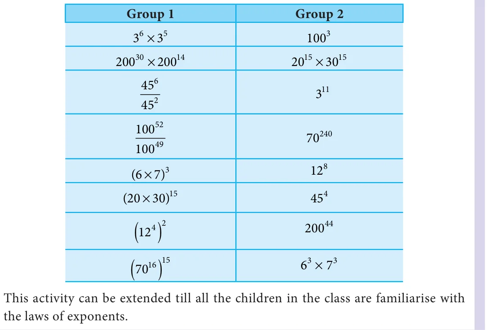
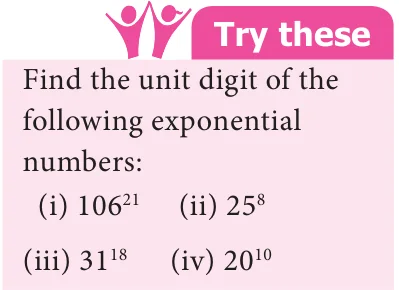
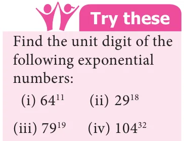

Finding the pair
the reason.

- 1.Fill in the blanks.
- (i)The exponential form 14 should be read as_______________
- (ii)The expanded form of p q is________________
- (iii)When base is 12 and exponent is 17, its exponential form is_____________
- (iv)The value of \((14 \times 21)\) is_______________
- 2.Say True or False.
- (i)\(2 \times 3 = 6\)
- (ii)\(2 \times 3 = (2 \times 3)\)
\(9 2 9 \times 2\)
- (iii)\(3 \times 3 = 3\)
- (iv)\(2 = (1000)\)
- (v)\(2 < 3\)
- 3.Find the value of the following.
(i)2 (ii)11 (iii)5 (iv)9
- 4.Express the following in exponential form.
\((i)6 \times 6 \times 6 \times 6\) (ii)t \(\times t\) (iii)5 \(\times 5 \times 7 \times 7 \times 7 (iv)2 \times 2 \times a \times a\)
- 5.Express each of the following numbers using exponential form.
(i)512 (ii)343 (iii)729 (iv)3125
- 6.Identify the greater number in each of the following.
(i)6 or 3 (ii)5 or 3 (iii)2 or 8
- 7.Simplify the following.
\((i)7 \times 3 (ii)3 \times 2\) (iii)5 \(\times 10\)
- 8.Find the value of the following.
(i)( \(- 4)\) (ii) ( \(- 3) \times\) ( \(- 2)\) (iii)( \(- 2) \times\) ( \(- 10)\)
- 9.Simplify using laws of exponents.
\((i)3 \times 3\) (ii)a \(\times a\) (iii)7 \(\times 7 (iv)2 \div 2\)
\((v)18 \div 18 (vi)(6\) ) (vii)(x ) (viii)9 \(\times 3\)
- (ix)\(3 \times 12 (x)25 \times 5\)
- 10.If \(a = 3\) and \(b = 2\), then find the value of the following.
(i)a \(+ b\) (ii)a \(- b\) (iii)(a + b) (iv)(a - b)
- 11.Simplify and express each of the following in exponential form:
- (i)\(4 \times 4 \times 4\) (ii) \((3 \times 3\) ) (iii) \((5 \times 5\) ) \(\div 5\)
- (iv)\(2 \times 3 \times 4\) (v) \(\frac{4 \times a \times b}{43 \times a5 \times b2}\)
Objective type questions
- 12.\(a \times a \times a \times a \times a\) is equal to
- (i)a (ii) 5 (iii) 5a (iv) \(a + 5\)
- 13.The exponential form of 72 is
(i)7 (ii) 2 (iii) \(2 \times 3\) (iv) \(2 \times 3\)
- 14.The value of x in the equation \(a = x \times a\) is
- (i)a (ii) 13 (iii) 3 (iv) 10
- 15.How many zeros are there in 100 ?
- (i)2 (ii) 3 (iii) 10 (iv) 20
- 16.\(2 + 2\) is equal to
- (i)4 (ii) 2 (iii) 2 (iv) 4
3.4 Unit Digit of Numbers in Exponential Form
Manipulating with exponent is very interesting and funny too.
We know that \(9 = 9 \times 9 \times 9 = 729\) , thus the unit digit (the last number of expanded
form) of 9 is 9. Similarly, 4 is \(4 \times 4 \times 4 \times 4 = 256\) . Thus the unit digit of 4 is 6.
Can you guess the unit digit of 230 , 181 , 55 , 56 and 9 ? It is very difficult to find by expanding the exponential form. But, we can try to tell the unit digit by observing some patterns.
Look at the following number pattern.
\(10 =10 \times 10 \times 10 =1000\)
\(10 =10 \times 10 \times 10 \times 10 =10000\)
\(10 =10 \times 10 \times 10 \times 10 \times 10 =100000\)
Thus, multiplying 10 by itself several times, we always get the unit digit as 0. In other words, 10 raised to the power of any number has the unit digit 0. That is, the unit digit of
10 is always 0, for any positive integer x.
This is also true when the base is multiples of 10. Consider,
\(40 = (4 \times 10) = 4 \times 10 =16 \times 100 =1600\)
Similarly, \(230 = (23 \times 10) = 23 \times 10\)
Thus, the unit digit of 230 is 0. Now, observe that,
\(1 =1 \times 1 \times 1 \times 1 \times 1=1\)
\(1 =1 \times 1 \times 1 \times 1 \times 1 \times 1=1\)
We learnt to expand 11 as 10+1.
So, \((10 +1) =11 =11 \times 11=121\)
Similarly, \(131=130 +1= (13 \times 10)+1\)
\([(13 \times 10)+1] =131 =131 \times 131=17161\)
Hence, if the exponential number is in the form 1 or [(multiple of \(10) + 1]\) , then the unit digit is always 1, where x is a positive integer.
Therefore, the unit digit of 181 is 1.
Similarly, by observing the following patterns, we can conclude that the unit digit of number with base ending with 5 is 5 and number with base ending with 6 is 6.
\(5 = 5 6 = 6\)
\(5 = 5 \times 5 = 25 6 = 6 \times 6 = 36\)
\(5 = 25 \times 5 =125 6 = 36 \times 6 = 216\)
Therefore, the unit digit of \(55 = (50 + 5)\) is 5 and the unit digit \(of56 = (50 + 6)\) is 6. We conclude that, for the base number whose unit digits are 0,1,5 and 6 the unit digit of a number corresponding to any positive exponent remains unchanged. Example 3.11 Find the unit digit of the following exponential numbers:
(i)25 (ii)81 (iii) 46
Solution
- (i)25
Unit digit of base 25 is 5 and power is 23

Thus, the unit digit of 25 is 5.
- (ii)81
Unit digit of base 81 is 1 and power is 100
Thus, the unit digit of 81 is 1.
- (iii)46
Unit digit of base 46 is 6 and power is 31
Thus, the unit digit of 46 is 6.
Look into the following example. Observe the pattern of unit digit when the base is 4.
\(4 = 4\) (odd power) \(4 = 4 \times 4 =16\) (even power)
\(4 = 4 \times 4 \times 4 =16 \times 4 = 64\) (odd power) \(4 = 64 \times 4 = 256\) (even power)
\(4 = 256 \times 4 =1024\) (odd power) \(4 =1024 \times 4 = 4096\) (even power)
Note that for base ending with 4, the unit digit of the expanded form alternates between 4 and 6. Further we can notice when the power is odd its unit digit is 4 and when the power is even it is 6.
Similarly, when the base unit is 9,
\(9 = 9\) (odd power) \(9 = 9 \times 9 = 81\) (even power)
\(9 = 9 \times 9 \times 9 = 81 \times 9 = 729\) (odd power) \(9 = 729 \times 9 = 6561\) (even power)
\(9 = 6561 \times 9 = 59049\) (odd power) \(9 = 59049 \times 9 = 531441\) (even power) Thus, for base ending with 9, the unit digit after the expansion is 9 for odd power and is 1 for even power.
As we have seen in the earlier case, this rule is applicable, when the base is in the form of [(multiple of 10)+4] or [(multiple of 10)+9].
For example consider, 24 In this, unit digit of base 24 is 4 and power is 12 (even power).
Therefore, unit digit of 24 is 6.
Similarly consider, 89 Here unit digit of base 89 is 9 and power is 21 (odd power).
Therefore, unit digit of 89 is 9.
We conclude that, for base ending with 4, the unit digit of the expanded form is 4 for odd power and is 6 for even power. Similarly, for base ending with 9, the unit digit of the expanded form is 9 for odd power and is 1 for even power. Remember, 4 and 6 are complements of 10. Also, 9 and 1 are complements of 10.
Example 3.12 Find the unit digit of the large numbers: (i) 4 (ii) 64
Solution

- (i)4
Unit digit of base 4 is 4 and power is 7 (odd power).
Therefore, unit digit of 4 is 4.
- (ii)64
Unit digit of base 64 is 4 and power is 10 (even power).
Therefore, unit digit of 64 is 6.
Example 3.13 Find the unit digit of the large numbers: (i)9 (ii) 49
Solution
- (i)9
Unit digit of base 9 is 9 and power is 12 (even power).
Therefore, unit digit of 9 is 1 .
- (ii)49
Unit digit of base 49 is 9 and power is 17 (odd power).
Therefore, unit digit of 49 is 9.
The following activity will help you to find the unit digits of exponent numbers whose base is ending with 2,3,7 and 8.
Activity
Observe the table given below. The numbers in first column, that is 2,3,7 and 8 denotes the unit digit of base of the given exponent number and the numbers in the first row, that is 1,2,3 and 0 stands for the remainder when power is divided by 4.
The remainder when power is divided by 4 1 2 3 0 2 2 4 8 6 3 3 9 7 1 7 7 9 3 1 8 8 4 2 6
For example, consider 2
Unit digit of base 2 is 2 and power is 6. When the power 6 is divided by 4, we get the remainder as 2.
From the table, we see that 2 and 2 corresponds to 4. Therefore, the unit digit
of 2 is 4. To verify, \(2 = 2 \times 2 \times 2 \times 2 \times 2 \times 2 = 64\) .
Similarly, consider 117
Unit digit of base 117 is 7 and power is 20. When the power 20 is divided by 4, we get the remainder as 0.
From the table, we see that 7 and 0 corresponds to 1. Therefore, the unit digit
of 117 is 1.
Now, you can extend this activity for finding the unit digits of any exponent number whose base is ending with any of 2,3,7 or 8.

- 1.Fill in the blanks.
- (i)Unit digit of \(124 \times 36 \times 980\) is ____________
- (ii)When the unit digit of the base and its expanded form of that number is 9, then
the exponent must be _____________ power.